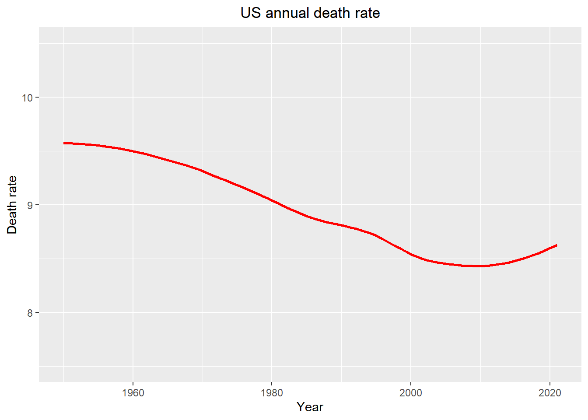

COVID19 Analysis
2021-04-09
Chapter 1 Introduction
Check permission for webscraping
## [1] TRUE
2020 is definitely a hard year where everyone’s life was tremendously influenced by COVID19. To better understand this pandemic, we believe, it is worthwhile giving a thorough study of the origin and the spread of the pandemic.
In this project, which is initially inspired by the graph above, we would like to investigate a few “new” and controversial opinions regarding to the pandemic. By looking into the US annual death rate, it is easy to realize that the death rate has an increasing trend in last decade. We do not observe a significant spike in 2020. It seems that COVID19 did not cause a lot more deaths than what we expected (or what had been reported). If we pay a bit more attention to the gradient at 2020, the gradient is less than the previous year, which is quite counter-intuitive. After doing some researches, we found a few interesting beliefs that may justify our findings. The beliefs are as follows:
The COVID pandemic had actually started before 2020 in the US under the cover of winter flu.
The pandemic became not as killing after summer 2020.
Some specific groups of people (the white) are less prone to the virus.
We would like to investigate the first two beliefs by comparing death counts and extend the last problem to a more general one: What are the factors that may affect death rate.